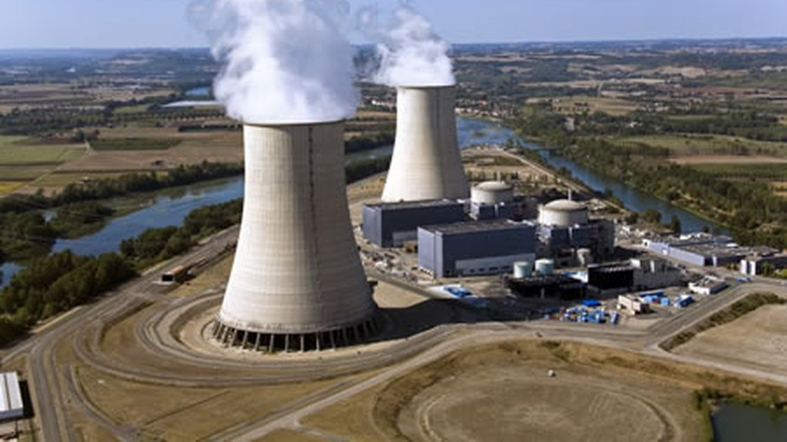
Ce stage de quatre mois portait sur la construction d’un schéma de cœur neutronique complet, à l’aide de codes de calcul déterministes développés en interne au CEA. J’ai suivi tout le processus — des calculs d’assemblage individuels jusqu’à un modèle de cœur de réacteur entièrement assemblé.
Au-delà de l’aspect technique, ce projet a approfondi ma compréhension de la neutronique et de la physique des réacteurs — les effets physiques qui régissent le comportement du cœur. La prise en main d’un code complexe et inconnu a été le principal défi, et le surmonter a été l’une des parties les plus gratifiantes du stage.
Compétences — neutronique · codes de calcul déterministes · modélisation de cœur · physique des réacteurs
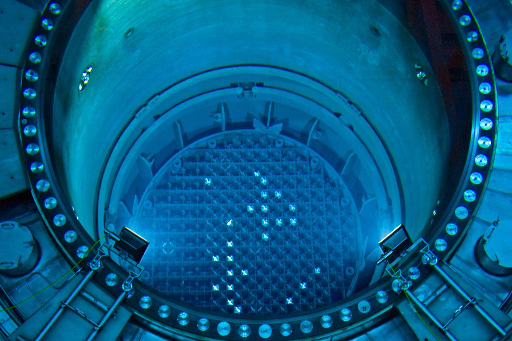
.png)
Ce projet visait à évaluer la faisabilité économique et la stratégie de déploiement d’un moteur à combustion interne à hydrogène pour des applications maritimes et industrielles à l’horizon 2030.
J’ai contribué à l’analyse de marché, à la définition des zones cibles, au benchmark concurrentiel et à la modélisation économique, en intégrant les contraintes réglementaires et le niveau de maturité des infrastructures.
Compétences — analyse de marché · stratégie énergétique · systèmes hydrogène · travail en équipe
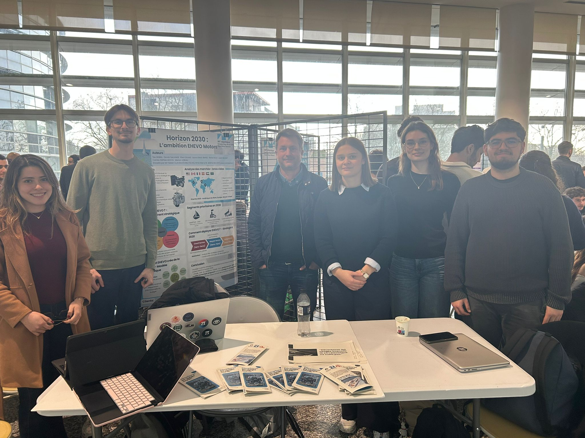
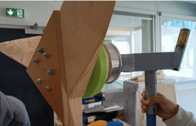
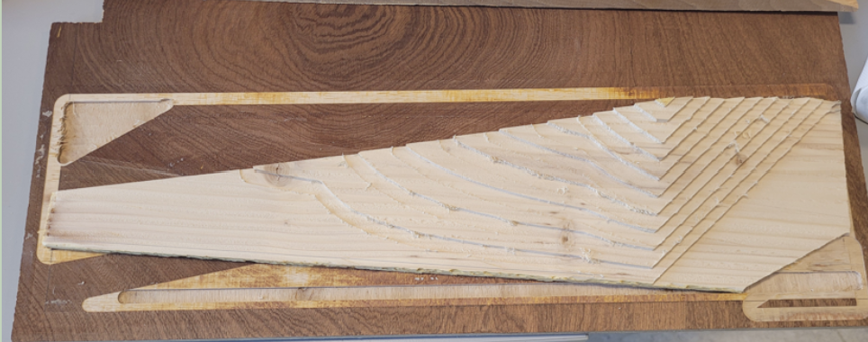
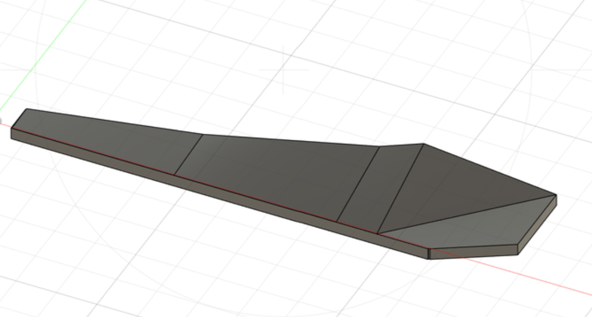
Ce projet pratique consistait à concevoir et fabriquer une pale d’éolienne de type Piggott, en combinant théorie aérodynamique et fabrication manuelle.
J’ai travaillé sur le modélisation CAO, l’optimisation géométrique, la sélection des matériaux et l’usinage CNC, afin de transformer des profils théoriques en un composant fonctionnel.
Compétences — CAO · usinage · aérodynamique · énergies renouvelables
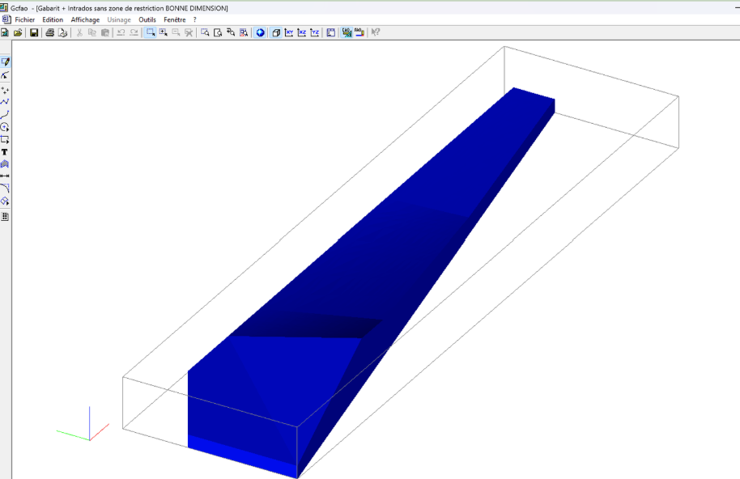
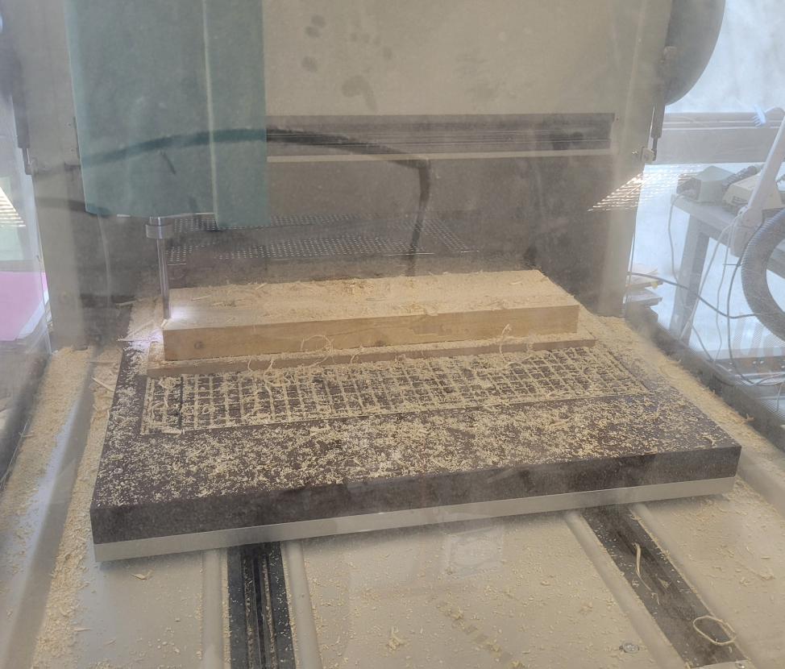
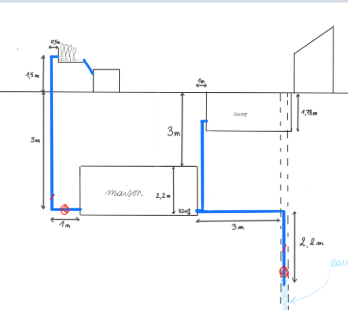
Ce projet explorait la conception d’une maison semi-enterrée en mettant l’accent sur l’inertie thermique, les stratégies passives et la performance environnementale.
J’ai travaillé sur la distribution architecturale, l’analyse des flux énergétiques et les concepts de ventilation et d’isolation, dans l’objectif de réduire les besoins énergétiques grâce aux choix de conception.
Compétences — analyse thermique · efficacité énergétique · conception architecturale
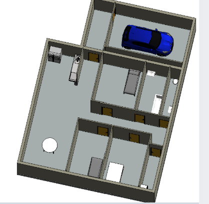
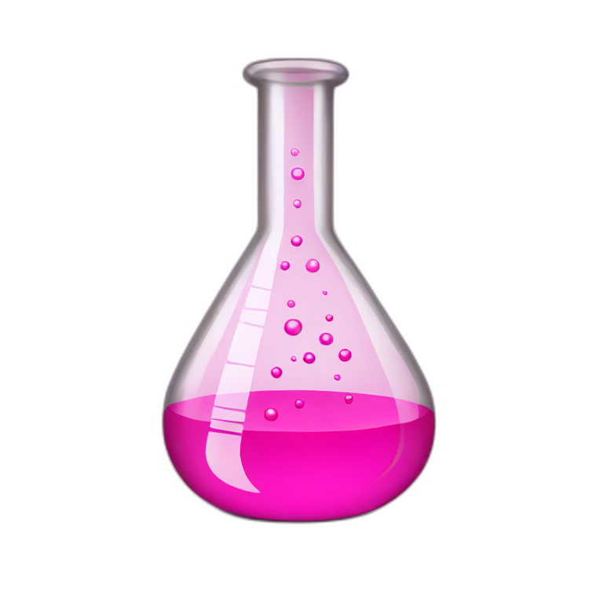